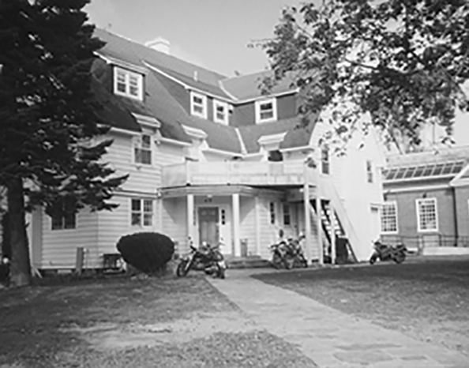

Chapter 6 on the roll
The Zeta


- Position on the roll#6
- InstitutionDartmouth College
- Chartered1842
- StatusActive since 1842
- Coat of armsfull-size PDF
Notable brothers of the Zeta


In the archive
Pages that name the Zeta Chapter or its institution.
Named on 947 pages across 357 volumes of the archive.
…tial Coitb^nlbn Ol THK PSI UPSILON FRATERNITY, HKLD WITH THE ZETA CHAPTER, DARTMOUTH COLLEGE, Wedn@^4%y and Thursday, June 4th and 5th, 1873. f>a |t.efaj ^0rk : PRINTED BY J. B. FORD & CO. 1873-
…the work of preparing a new edition of our Song-book be com mitted to the Zeta Chapter, with instructions to collect all of the un published songs in the Fraternity, if possible to secure the writing of new ones, and report the result o…
…carried. Bro. McElroy (Zeta) requested the Chapters to make kno\yn to the Zeta Chapter the number of New Song Books they will want. On motion of Bro. Smith {Gamma) the Convention adjourn ed until 8 o'clock in the evening.
…tee congratulates the Fraternity on the efficient services rendered by the Zeta Chapter, in the compilation of the new Song Book, and would recommend that each Chapter inform its graduate members where a new edition of the same can be ob…
…ning; correspondence to Mr. G. T. Eaton, Lock Box 17, Amherst, Mass. ZETA (Dartmouth College 1842).�Chapter Rooms; Brick Block, Main street, Hanover ; meets Wednesday evening ; correspondence to Mr. F. W. Gove, Lock Box 468, Hanover, N. H. LA…
Page2….�Correspondence to Mr. G. T. . - Eaton, Lock Box 17, Amherst, Mass. ZETA (Dartmouth College 1842).� Correspondence to Mr. H. S. Dearing, Lock Box 468, Hanover, N. H. LAMBDA (Columbia College'1842).�Correspondence to Mr. C; S. Allen, Columbia…
Page8…841).- Correspondence to Mr. G. T Eaton, Lock Box 17, Amherst, Ma^s. ZETA (Dartmouth College 1842).� Correspondence to Mr. H. S. Dearing, Lock Box 468, Hanover, N. H. LAMBDA (Columbia College 1842).�Correspondence to Mr. C. S. Allen,. Columbi…
Page2…41).� Correspondence to Mr. G. T. Eaton, Lock Box 17, Amherst, Mass. ZETA (Dartmouth College 1842).� Correspondence to Mr. H. S. Dearing, Lock Box 468, Hanover, N. H. LAMBDA (Columbia College r842).�Correspondence to Mr. C. S. Allen, Columbia…
Page8…).� Correspondence to Mr. J. F. Jameson, Lock Box 17, Amherst, Mass. ZETA (Dartmouth College 1842). � Correspondence to Mr. H. S.' Dearing, Lock Box 468, Hanover. N. H. LAMBDA (Columbia College 1842).�Correspondence to Mr. V. Spader, Columbia…
Page4…1).�Correspondence to Mr. J. F. Jameson, Lock Box 17, Amherst, Mass. ZETA (Dartmouth College 1842).� Correspondence to Mr. H. S. Dearing, Lock Box 468, Hanover. N. H. LAMBDA (Columbia College 1842).�Correspondence to Mr. V. Spader, Columbia C…
Page86 Bro. W. L. Pierce (Z 1880) offered on behalf of the Zeta Chapter the fol lowing resolution, which was referred to the Oonmittee on New Business : Geneeal Resolution No. 3. � '�'Resolved, That the General Convention…
…respondence to Mr. Geo. Alex. Strong, lock box 17, Amherst, Mass. 6. ZETA (Dartmouth College 1842).�Correspondence to Mr. \V. C. French, Jr., Hanover, N. H. 7. LAMBDA (Columbia College 1842).�Correspondence to Mr. Geo. S. Baymer, Columbia Col…
Page16…d of typhoid fever, at his home, in Man chester, N. H., .January 11, 1881. The Zeta Chapter, wishing to express its sympathy, addressed the following letter to his parents :� Psi Upsilon Hall, ] Hanover, N. H., Feb. 1, 1881. f Hon. David Cro…
…53, Amherst, Mass. 6. ZETA (Dartmouth College. 1843).� Correspond ence to Zeta Chapter of Psi Upsilon, Dartmouth College, Hanover,. N, H. 7. LAMBDA (Columbia College, 1843).�Correspond ence to Lambda Chapter of Psi Upsilon, Columbia Col…
Page8…lta. 184l', Nov. 16�Gamma Chapter founded at Amherst College. 1842, May 10�Zeta Chapter founded at Dartmouth College. 1842, �First General Catalogue Issued. 1842, June 20^Lambda Chapter founded at Columbia College. 1843, July 26� Second…
…es," has been ap pointed Professor of English Literature and AngloSaxon in Dartmouth College. BETA BETA. '54. The Eev. W. A. Hitchcock, D. D., has ac cepted the rectorship of a parish in Batavia, N. Y. '73. At the recent commencement of Yale…
Page14…Professor in the Medical Departments of the University of Michigan and of Dartmouth College. '65. At the last Commencement the Degree of D.D. was conferred upon Rev. William V. KeUey.
…k box 53 Amherst, Mass. Zeta (Dartmouth College, 1842)� Cor respondence to Zeta Chapter of Psi Upsi lon, Dartmouth College, Box 468, Han over, N. H. Lambda (Columbia College, 1842)� Cor respondence to 26 West 23d Street, N. Y. Kappa (Bow…
Page13…k box 53 Amherst, Mass. Zeta (Dartmouth College, 1842)� Cor respondence to Zeta Chapter of Psi Upsi lon, Dartmouth College, Box 468, Han over, N. H. Lambda (Columbia College, 1842)� Cor respondence to 26 West 23d Street, N. Y. Kappa (Bow…
Page13…k box 53 Amherst, Mass. Zeta (Dartmouth College, 1842)� Cor respondence to Zeta Chapter of Psi Upsi lon, Dartnaouth College, Box 468, Han over, N. H. Lambda (Columbia College, 1842)� Cor respondence to 26 West 23d Street, N. Y. Kappa (Bo…
Page17…re for those who will hear Professor Goodwin. Prof A. S. Hardy, F, '68, of Dartmouth College, wellknown as the author of several text-books upon the higher mathematics, and still better known, perhaps, as the author of the recent novel "But Y…
…k box 53 Amherst, Mass. Zeta (Dartmouth College, 1842)� Cor respondence to Zeta Chapter of Psi Upsi lon, Dartmouth College, Box 468, Han over, N. H. Lambda (Columbia College, 1842)� Cor respondence to 26 West 23d Street, N. Y. Kappa (Bow…
Page13…he Beta Beta (afterwards Chapter) founded in Trinity College Feb. 3, 1842. The Zeta Chapter established in Dartmouth College . . May to, 1842. The Lambda Chapter established in Columbia College . June 20, 1842. Decennial convention held with…
…i University ' Providence, R. I. GAMMA Amherst College Amherst, Mass. ZETA Dartmouth College ...HAnover, N. H. LAMBDA Columbia College 49 West 48th St., N. Y. KAPPA .Bowdoin College Brunswick, Me. PSI.. HamUton College.. Clinton, N. Y. XI Wes…
Page130…f Dartmouth CoUege, was recently invited to attend a public meeting of the Zeta Chapter. He was a graduate of the U. S. Military
Page7…D. Salinger (Z, '92) invited the delegates to the next Convention with the Zeta Chapter, as the next following the Gamma in the roll of Chap ters, On motion of Bro. R. B. Watson {A, '91), it was voted to suspend all rules in order that t…
Page10…THE CONVENTION OF THE Psi Upsilon Fraternity, HELD WITH THE ZETA CHAPTER, DARTMOUTH COLLEGE, HANOVER, N. H. Thursday and Friday, May i8 and 19, 1893. No. XXII of the Printed Series. PUBLISHED BY THE EXECUTIVE COUNCIL. The Sixtieth Year of th…
…g at Pembroke Academy and at Phillips-Exeter Academy, and was graduated at Dartmouth College in 1856. In
…the death of Ex-President Seelye, one of its most eminent alumni. Zeta. � Dartmouth College. There were 35 undergrad uate members in the Zeta last year. Of these ten were Sen iors, five Juniors, nine Sophomores and twelve Freshmen. The other…
…rill, Chicago, 111. ; and William Fessen den Merrill, Portland, Me. Zeta. �Dartmouth College. Elections to the Zeta were conferred November 20, but as the initiation has not yet taken place, the names of the candidates will not be given until…
Page29…to the Executive Council's com munication to the Convention, held with the Zeta Chapter at Han over, N. H., May 18th and 19th, 1893. The majority report was as follows : To the Hjnordble Executive Council of the Psi Upsilon Fraternity. B…
Page27…found in none so much genuine poetical talent". RECENT INITIATIONS. Zeta� Dartmouth College. The 54th annual initiation of the Zeta took place Dec. 6. These men were admitted: Richard Macy, '98, Belmont, Mass.; Samuel Burns, Jr., Omaha, Neb.…
Page31…aga zine. At the Convention held under the auspices of the Zeta Chapter at Dartmouth College in May, 1893, Mr. Knox Kin ney, '94, introduced by the Phi delegates, presented the case of the petitioners; and to the exceedingly favorable impress…
Page14…, '85, Chicago, 111. tFrederick S. Fales, '96, Amherst, Mass. ZETA CHAPTER DARTMOUTH COLLEGE. Richard Hovey, '85, Washington, D. C. George M. Lewis, '97, Hanover, N. H. LAMBDA CHAPTER COLUMBIA COLLEGE. Alexander Macomb Stanton, '56, Detroit,…
Page3117 'Pi^YMm^TB�Continued. Payments brought forward $253 27 Telegram to Zeta Chapter 43 G. S. Coleman, express charges on insignia 10 25 Postage on song books 55 L. H. Biglow & Co. , minute book 2 50 Armstrong & Co., insurance on song…
Page20…913 29.09 Wm. Edwin Rudge, Menu Covers 9.00 T. L. Waugh, expenses visiting Zeta Chapter. . 24.00 Geo. S. Coleman, disbursements as Secretary. . 55.94 expenses, visiting Elmira Alumni 17.55 A. M. Poole, disbursements as Treasurer 4.50 439…
Page20…ly adopted (Special Resolution No. 6). Bro. Walters (Zeta) stated that the Zeta Chapter desired to hold the Convention of 1916, and Bro. Moorhead (Mu) made a similar statej ment on behalf of the Mu Chapter for the Convention of 1917. Bro…
Page12…OF THE CONVENTION OF THE Psi Upsilon Fraternity HELD WITH THE ZETA GHAPTER DARTMOUTH COLLEGE HANOVER, NEW HAMPSHIRE MAY 4, 5 AND 6, 1916 No. XLV of the Printed Series PUBLISHED BY THE BJXEOUTIVE COUNCIL .The BJighty-thlrd Year of the F"rat6rn…
…rnity which was in preparation at the time of the Convention held with the Zeta Chapter in 1916 was completed in the Spring of 1917 and has been widely circulated. A specially bound copy of the catalogue was presented to each Chapter. Th…
Page24…nning St., Providence, R. I. GAMMA � Amherst College Amherst, Mass. ZETA � Dartmouth College Hanover, N. H. LAMBDA � Columbia University 627 West 115th St., New York City. KAPPA � Bowdoin College 250 Main St., Brunswick, Maine. PSI � Hamilton…
…nning St., Providence, R. I. GAMMA � Amherst College Amherst, Mass. ZETA � Dartmouth College Hanover, N. H. LAMBDA � Columbia University. 627 West 115th St., New York City KAPPA � Bowdoin College 250 Main St., Brunswick, Maine PSI � Hamilton…
…nning St., Providence, R. I. GAMMA � Amherst College Amherst, Mass. ZETA � Dartmouth College Hanover, N. H. LAMBDA � Columbia University. 627 West 115th St., New York City KAPPA � Bowdoin College 250 Main St., Brunsvsdck, Maine PSI � Hamilton…
…nning St., Providence, R. I. GAMMA � Amherst College Amherst^ Mass. ZETA � Dartmouth College Hanover, N. H. LAMBDA � Columbia University. 627 West 115th St., New York City KAPPA � BowDoiN College 250 Main St., Brunswick, Maine PSI � Hamilton…
…Manning St., Providence, R. I. GAMMA� Amherst College Amherst, Mass. ZETA� Dartmouth College Hanover, N. H. LAMBDA�CoLUMBU University 627 West 115th St., New York City KAPPA� Bowdoin College 250 Main St., Brunswick, Maine PSI� Hamilton Colleg…
…anning St., Providence, R. I. GAMMA� ^Amherst College Amherst, Mass. ZETA� Dartmouth College Hanover, N. H. LAMBDA�Columbia University. . 627 West 115th St., New York City ELAPPA� Bowdoin College 250 Main St., Brunswick, Maine PSI�Hamilton Co…
…e New York, New Haven and Hartford. G. W. Carmany, Associate Editor. ZETA� Dartmouth College, March 2, 1922. ON the evening of February 7th the Zeta pledged a delegation from the class of 1925. Since this is only the second year of the late r…
Page58…nning St., Providence, R. I. GAMMA� ^AiiHERST College Amherst, Mass. ZETA� Dartmouth College Hanover, N. H. LAMBDA�Columbia University. 627 West 115th St., New York City KAPPA� BowDoiN College 250 Main St., Brunswick, Maine. PSI� Hamilton Col…
…Manning St., Providence, R. I. GAMMA�Amherst College Amherst, Mass. ZETA� Dartmouth College Hanover N. H. LAMBDA�Columbia University. 627 West 115th St., New York City KAPPA�Bowdoin College 250 Main St., Brunswick, Maine. PSI�Hamilton Colleg…
…Manning St., Providence, R. L GAMMA� Amherst College Amherst, Mass. ZETA� Dartmouth College Hanover, N. H. LAMBDA�Columbia University. 627 West 115th St., New York City KAPPA�Bowdoin College 250 Main St., Brunswick, Maine. PSI� Hamilton Coll…
…Manning St., Providence, R. I. GAMMA� Amherst College Amherst, Mass. ZETA� Dartmouth College Hanover, N. H. LAMBDA�CoLXMBiA University. 627 West 115th St., New York City KAPPA�BoviTDoiN College 250 Main St., Brunswick, Maine. PSI�Hamilton Col…
…Manning St., Providence, R. I. GAMMA� Amherst College Amherst, Mass. ZETA� Dartmouth College Hanover, N. H. LAMBDA�Columbia University. 627 West 115th St., New York City KAPPA�BowDom College 250 Main St., Brunswick, Maine. PSI�Hamilton Colleg…
…Manning St., Providence, R. I. GAMMA� Amherst College Amherst, Mass. ZETA� Dartmouth College Hanover, N. H. LAMBDA�Columbia University. 627 West 115th St., New York City KAPPA�BowDOiN College 250 Main St., Brunswick, Maine. PSI�Hamilton Colle…
…Maiming St., Providence, R. I. GAMMA� Amherst College Amherst, Mass. ZETA� Dartmouth College Hanover, N. H. LAMBDA�Columbia University. 627 West 115th St., New York City KAPPA�Bowdoin College 250 Main St., Brunswick, Maine. PSI�Hamilton Colle…
…Manning St., Providence, R. I. GAMMA� Amherst College Amherst, Mass. ZETA� Dartmouth College Hanover, N. H. LAMBDA�Columbia University. 627 West 115th St., New York City KAPPA� Bowdoin College 250 Main St., Brunswick, Maine. PSI�Hamilton Coll…
…Manning St., Providence, R. I. GAMMA� Amherst College Amherst, Mass. ZETA� Dartmouth College Hanover, N. H. LAMBDA�Colibibia University. 627 West 115th St., New York City KAPPA�Bowdoin College 250 Main St., Brunswick, Maine. PSI� Hamilton Col…
…edicting such, we close. L. L. Hall, A. H. Grant, Associate Editors. ZETA� Dartmouth College COLLEGE opened vigorously and Worthington had his husky charges capromptly in the middle of Septem- vorting over the gridiron some weeks beber, as is…
Page53…anning St., Providence, R. I. GAMMA� ^Amherst College Amherst, Mass. ZETA� Dartmouth College Hanover, N. H. LAMBDA�Columbia University 627 West 115th St., New York City KAPPA� ^Bowdoin College 250 Main St., Brunswick, Maine. PSI� Hamilton Coi…
…anuing St., Providence, R. I. GAMMA� ^Amherst College Amherst, Mass. ZETA� Dartmouth College Hanover, N. H. LAMBDA�Columbia University 627 West 115th St., New York City KAPPA� ^BowDom College 250 Main St., Brunswick, Maine. PSI� Hamilton Coll…
…Manning St., Providence, R. I. GAMMA� Amherst College Amherst, Mass. ZETA� Dartmouth College Hanover, N. H. LAMBDA�Columbia University 627 West 115th St., New York City KAPPA�BoWDOIN College 250 Main St., Brunswick, Maine PSI�Hamilton College…
…nning St., Providence, R. I. GAMMA� ^Amherst College .Amherst, Mass. ZETA� Dartmouth College Hanover, N. H. LAMBDA� Columbia University 627 West 115th St., New York City KAPPA�Bowdoin College 250 Main St., Brunswick, Maine PSI� Hamilton Colle…
…y for an InterGAMMA� Amherst University (No communication received) ZETA� -Dartmouth College
Page76…keepsie seem to be in order, and the more fortunate brothers who are ZETA� Dartmouth College
Page54…HI., during the Easter re cess. Wm. C. King, Jr., Associate Editor. ZETA� Dartmouth College
Page52…Manning St., Providence, R. I. GAMMA� Amherst College Amherst, Mass. ZETA� Dartmouth College Hanover, N. H. LAMBDA� Columbia University 627 West 115th St., New York City KAPPA�Bowdoin College 250 Main St., Brunswick, Maine PSI� Hamilton Colle…
106 The Diamond of Psi Upsilon ZETA� Dartmouth College (No communication received) LAMBDA�Columbia University TMMEDIATELY before the Christ- �*� mas vacation, the annual rushing period here at Columbia ca…
Page48…anning St., Providence, R. I. GAMMA� ^Amherst College Amherst, Mass. ZETA� Dartmouth College Hanover, N. H. LAMBDA�Columbia University 627 West 115th St., New York City KAPPA� Bowdoin CollegiI 250 Main St., Brunswick, Maine PSI� iHamilton Col…
…ould come through again. It has been a happy and successful Spring for the Zeta Chapter. Brothers Ellis and Spaeth won straight D's with Dartmouth's league champion basketball team. Brothers Bill and Bob Fryberger and Rogers received str…
Page47…nterest to me. One was the story of the joint letter written by two men in Dartmouth College to the daily publication of their college. The other was a quotation from the mid year report to the Board of Trustees by President Baker of Washingt…
…r, Ernest Martin Hopkins, a member of Delta Kappa Epsilon and President of Dartmouth College, have been invited to speak on "The Challenge to Fraternities by the Present Scholastic Require ments of Our American Colleges and Universities. ' '…
…e scale of grades is A, B, C, D, F, with corresponding grade points, 6, 4, DARTMOUTH COLLEGE 1926-27 The scholastic record of the fraternities for 1926-1927 as given below makes an interesting comparison with a similar record for 1925-1926. I…
…er Carl Spaeth was elected to t captain next year's basketball team. ZETA� Dartmouth College
…ic, N. J. Stewart Wilder Wells, Jr ll Dell Place, Minneapolis, Minn. ZETA� Dartmouth College Class of 1931 Henry William Alton, Jr New York City Stiles Wilton Burr Evanston, Illinois Leonard Johnson Clark Newton Highlands, Mass. Donald Babcoc…
…going into the business world. Fred C. Griffiths WiLUAM B. Plunkett ZETA� Dartmouth College No Commimication received LAMBDA� Columbia University THIS fall has witnessed a very marked change at the Lambda house in the form of a rehabilitatio…
…tioned in this maga zine. At the Convention held under the auspices of the Zeta Chapter at Dartmouth College in May, 1893, Mr. Knox Kinney, '94, introduced by the Phi delegates, presented the case of the petitioners; and to the exceeding…
…onors for our Undergraduates Page 273 Chapter Scholarship Records Page 275 Zeta Chapter, Life Subscribers to Diamond Supporting Bridgman Memorial Fund Page 280 Notice of Expulsion Page 282 Alumni Associations Page 283 A Hint to European…
…eseo, N. Y. William Smith Woodress 52 Glen Road, Webster Groves, Mo. ZETA� Dartmouth College Class of 1932 Benjamin Davis Burch 2110 G St. N. W., Washington, D. C. EwDARD Barton Hall, Jr 327 Chemurg St., Waverly, N. Y. Stephen G. Harwood The…
…Bob Booth and Frank Hodson are on the Carnival BaU Committee, Booth ZETA� Dartmouth College
…ington every time you have a convention if you can get a Beta man from the Zeta Chapter to preside. (Laughter) I have long known your dear Chairman in many different capacities, but I venture to say that he never shines, even in that aug…
…assortment of heathen; but in some equally appropriate way he founded the Zeta Chapter. In 1860 William Walker Phelps, Beta '60 just out of college, founded the Iota Chapter at Kenyon College. The next founder was Andrew D.
…d at the close of the Civil War. Like his father and uncle, Hovey attended Dartmouth College, Hanover, N. H., from which he graduated in 1885 with an A.B. degree. Later, 1895, the degree of Litt.D. was conferred upon him. Always an outstandin…
…New Hampshire, on the occasion of the initiation of a delegation into the Zeta Chapter. (Applause) I hap pened then to be performing in company with a distinguished member of the Fraternity, and necessarily he and I went behind the barn…
…age more extensively understood. Stuart Wells, Jr., Associate Editor ZETA� Dartmouth College HAVING survived mid-years without any losses the Zeta started the second semester off very appropri ately with excellent Carnival parties. Shorty Bur…
…d at the close of the Civil War. Like his father and uncle, Hovey attended Dartmouth College, Hanover, N. H., from which he graduated in 1885 with an A.B. degree. Later, 1895, the degree of Litt.D. was conferred upon him. Always an outstandin…
…am) Stevens. He attended Phillips Academy, Andover, and was graduated from Dartmouth College in 1865. He studied law at Harvard Law School and with Sweetzer and Gardner of Boston, was admitted to the bar in Boston in 1867. He was district att…
…rles P. Williamson Glen CoVe, N. Y. Stephen Whitney New Haven, Conn. ZETA� Dartmouth College Qass of 1934 Albert Clifton Baldwin South Orange, New Jersey Robert Howard Burkart Chevy Chase, Maryland Alden Haskell Clark Hanover, New Hampshire T…
…ies on campus. Asahel Bosh, Jr. Joseph Warner, Jr. Associate Editors ZETA� Dartmouth College WITH Carnival a thing of the past and the slushy March season in the near future, Hanover lies in the grip of mid-winter. One of the most successful…
THE DIAMOND OF PSI UPSILON 29 ZETA� Dartmouth College Class of 1933 George Hans Werrenrath New York N. Y. Class of 1934 Frank William Parmalee, Jr Toledo, Ohio Stanley Charles Smoyer Akron, Ohio Class of…
…amond Fund (showing a loss on sales during the period of $83.93) 24,524.39 Due Zeta Chapter 30.00 $49,980.86 Page Nineteen
Page19…Jr., has recently moved to Seattle from the Middle West; Jack is from the Zeta Chapter at Dartmouth. Space does not permit going through the whole list of brothers who are in Seattle but we will remember them next time. Oliver H. Haskel…
Page32…'84 Hudson, N. Y. Guy Woodbridge Wadsworth, '84 Chicago, III. ZETA CHAPTER�Dartmouth College John Cooper Winslow, '77 Watertown, N. Y. Henry Boynton Johnson, '83 Woodstock, Vt. Henry Lee Hatch, '84 Stafford, Vt. LAMBDA CHAPTER�Co/um6ia Colleg…
…anning St., Providence, R. I. GAMMA� ^Amherst College Amherst, Mass. ZETA� Dartmouth College Hanover, N. H. LAMBDA�Columbia University 627 West 115th St., New York City KAPPA� Bowdoin College 250 Main St., Brunswick, Maine PSI� Hamilton Colle…
Page61…Bower MitcheU Tracy, Jr. Jbrold B. Foland Otto Haas Associale Editors ZETA�Dartmouth College ZETA started its ninety-first year with the pledging of twenty men. Especial recognition is due Brother Terhune and his Rushing Committee for their a…
…: The Psi Upsilon Fraternity of which he was a member and President of the Zeta Chapter shares with the coUege world a feeling of loss at his premature death now be it Resolved: That the Psi Upsilon Fraternity in Convention assembled exp…
…re, Lambda '8U New York, N. Y. "At recent dinner of young New York Alumni, Zeta Chapter, that group by vote extends hearty congratulations to the National Organization Psi UpsUon in its com memoration of the 100th Anniversary of Founding…
…tions "behind the scenes." In the United States, besides his major gift to Dartmouth College of the Amos Tuck School of Administration and Finance, in memory of his father, Mr. Tuck has given Uberally to the American Museum of Natural History…
20 THE DIAMOND OF PSI UPSILON ZETA.�Dartmouth College Class of 1936 Daniel John Holland Scarsdale, New York Von Daniel Gehmig Chattanooga, Tenn. William Thomas Care South Bend, Ind. Class of 1937 Sherman…
…ooking through exams toward Carnival. D. B. Judd, k Associate Editor. ZETA�Dartmouth College
…was completed and, for some reason, was caUed "Ye Polar Bar-e". The ZETA� Dartmouth College
…ence, R. I. GAMMA�Amherst College South Pleasant St., Amherst, Mass. ZETA� Dartmouth College Hanover, N. H. LAMBDA�Columbia University 627 West 115th St., New York City KAPPA�Bowdoin College 250 Maine St., Brunswick, Maine PSI�Hamilton Colleg…
Page69…Owl from Brother Walter T. Collins, Iota '02. Large oil painting from the Zeta Chapter and its Alumni depicting the coat-of-arms of the Fraternity in the middle panel, coat-of-arms of the Zeta Chapter in one side panel and the coat-of-a…
…elegates were on invitation sent to attend the initiation exercises of the Zeta Chapter. Brother A. Avery Hallock, '16, this year began his active service on the editorial board of The Diamond. The annual "communication" of the Executive…
…ta '15 While acting as toastmaster at the annual initiation banquet of the Zeta Chapter, Brother Allan Leach Priddy dropped dead. He was forty years old, and was one of the most active and loyal of all the Zeta Alumni. His many friends i…
…Williams .Montclau-, N.J. Gilbert Nilsson Woods West Hartford, Conn. ZETA� Dartmouth College Class of 1938 Colin J. MacLeod, Jr Chestnut Hill, Mass. Lucius NiMS Greenfield, Mass. Class of 1939 John A. Boynton .Red Bank, N.J. Robert B. Field B…
Salien Studio Merrill Davis, Zeta '38, captain-elect of the Dartmouth College football team. (See page 90)
THE DIAMOND OP PSI UPSILON 183 ZETA Dartmouth College The Dartmouth Winter Carnival was a big success at the house this year; we had dances here at the house both nights contrary to previous years, but b…
…aturday night beer parties and sings have been high lights. Rushing at the Zeta Chapter extends for the first ten days of the SOPHO MORE year of the rushee. We would ap preciate all recommendations early enough to be used when rushing be…
…rence Thomsen, Hudson, Ohio Robert McClellan Tiffany, Syra cuse, N.Y. ZETA Dartmouth College Class of 1940 Thomas A. Ballantyne, Jr., Sea Cliff, N.Y. Lee Barrett, Brookline, Mass. Hiram Belding, Glencoe, 111. Charles Bensinger, E. Stroudsburg…
…College in this period of stress and recognizes the excellent work of the Zeta Chapter in this progress. 3. The Convention appreciates the fine work of the Alumni Asso ciation of Psi Upsilon under the leadership of Benjamin T. Burton, C…
108 THE DIAMOND OF PSI UPSILON ZETA Dartmouth College As THE winter term begins the Brothers of the Zeta promise to be as outstanding as they were during the fall season. In the first place, Brothers Her…
…has done a fine job during the past semester in writing the history of the Zeta Chapter. In the December class elections. Brother Davis was elected President of the Senior Class, Brother Archibald, Vice-President, Brother Reno, Mar shal,…
…College in this period of stress and recognizes the excellent work of the Zeta Chapter in this progress; (3) The Convention appreciates the fine work of the Alumni Association of Psi Upsilon under the leadership of Brother Benjamin T. B…
…Convention of 1938, the portrait of Richard Hovey, Zeta '85, was given to Dartmouth College, and, on its behalf, has been gratefully accepted by President Hopkins. The Founders' Constitution: At the Convention banquet in 1936, Brother Archib…
…he Editor has just received the scholastic standing of the fraternities at Dartmouth College for the academic year 1937-38. In the November issue of The Diamond the averages were for the first and second semesters only. The Zeta with an avera…
…are privileged here to quote from a booklet entitled "The New Home of the Zeta Chapter." "The idea that the Zeta Chapter of Psi Upsilon needs a new home is not new. In 1929, the late Brother Allan Priddy, '15, set out to raise a Buildin…
…AMMA� r� Amherst College� 1841 South Pleasant St., Amherst, Mass. ZETA� Z� Dartmouth College� 1842 Hanover, N.H. LAMBDA�A�Columbia University�1842 627 West 116th St., New York City KAPPA� K� Bowdoin College� 1843 260 Maine St., Brunswick, Me.…
Page67…Teich graeber, Pelham, N. Y.; George Peters Whitelaw, St. Louis, Mo. ZETA Dartmouth College Class of 1941 : Ralph Lester Colton, Jr., Bryn Mawr, Pa.; John Victor Delander, Medford, Mass. Class of 1942: John Lawler Brooks, Minneapolis, Minn.;…
…the freshman quintet. R. D. HOLZAPFEL E. G. Merrill Associate Editors ZETA Dartmouth College On December 9th, after four days of "Hell Week," eighteen pledges were formally initiated into the HaU of the Zeta. After the initiation ceremony the…
…n particular. The 1893 Convention of Psi Up silon was slated to be held at Dartmouth College, Hanover, New
…Hon. Wilbur L. Cross, Beta '85, former governor of ConZETA OPENS NEW HOUSE Dartmouth College opened September 19, 1940. Conicident with this was the opening of the Zeta chapter's new fraternity house. Therein lies an interesting story of one…
…ollege South Pleasant Street November 16, 1841 Amherst, Massachusetts Zeta Dartmouth College Hanover, New Hampshire May 10, 1842 Lambda Columbia University 627 West 115th Street June 20, 1842 New York City Kappa Bowdoin College 250 Main Stree…
Page18…aluable suggestions have been made by Frederick S. Fales '96. ZETA CHAPTER Dartmouth College May 10, 1842 It was not until the spring of 1842 that our Fratemity added an other chapter. Dartmouth College in Hanover, N. H., had been founded in…
…Wentworth Tenney, re cently United States District Attomey, a graduate of Dartmouth College in the class of 1859. . . . On Thursday evening at 7:30 a large audience assembled at the Moravian School Hall. The members of Psi Upsilon, aU in eve…
…ntion in 1938 had been the resolution requesting the Council to present to Dartmouth College on be half of the Fratemity, at the donor's suggestion, a portrait of Richard Ho vey, Zeta '85, which had recently been acquired by Sydney E. Junkins…
Page43…he appreciation of the work done in behalf of the petitioning group by the Zeta Chapter. Someone has said that "heraldry is the shorthand of history." Those who understand the significance of the symbols on oiu: Coats-of-Arms� and who co…
Page18…n '71, Published in Boston. 76 pp. SEVENTH EDITION, 1876. In charge of the Zeta Chapter. Contains 90 songs and 2 instrumental pieces. Pubhshed in Boston. 143 pp. EIGHTH EDTiTON, 1878. Prepared under the direction of the Executive Coun ci…
Page5…The Beta BeU (afterwards Chapter) founded in Trinity College Feb. 3, 1842. The Zeta Chapter established in Dartmouth Ollege . . May 10, 1842. The Lambda Chapter established in Columbia College . June 20, 1842. Decennial convention held with…
…r, F. C, Z'S7, 2 Meynard St. Montgomery. R. A., ZZ'40, Wilder Labor atory, Dartmouth College Neef, F. J. A., O'06. 33 School St, Noldllnger, L, K,, Z'23, Dartmouth Col lege Pearson, L, D., DD'14, 10 Rope Perry Rd, Perkins, M. B,, Z'02 Pleasan…
Page27…ntennial anniversary. R. O. HoLZAPPEL E. G. Merrill Associate Editors ZETA Dartmouth College We have had a great fall. Lee Trudeau was captain of cross country; two pledges were on the soccer team and two were on the foot ball team. Captain L…
…iated into the Gamma. R. D. Holzapfel E. G. Merrill Associate Editors ZETA Dartmouth College The smoke from the biennial skirmish with exams has just cleared away and we find with great pleasure that we still have all our brothers with us. No…
…s 203 U. S. National Defense Presents Crisis to Colleges, Fraternities 205 Zeta Chapter Remodeling of House Is Completed 208 Recent Publications by Prominent Psi U's 210 Subscriptions fob Annals of Psi Upsilon Close July 1st By Peter A.…
…MMA� r� ^Amherst College� 1841 South Pleasant St.. Amherst, Mass. ZETA� Z� Dartmouth College� 1842 Hanover. N.H. LAMBDA� A� Columbia University� 1842 Livingston Hall, Columbia University KAPPA� K� Bowdoin College� 1843 260 Maine St.. Brunswic…
Page66…ur chases of jewelry in Canada. Brother Berry reported on his visit to the Zeta Chapter on October 27, 1941, and Brother Burton reported on his visit to the Lambda on October 28, 1941. Brother John E. Foster was delegated to visit the Ep…
…graduating with a B.E. degree in 1940. Lt. Raymond Hall, Jr., who attended Dartmouth College, graduating with a B.A. degree in 1941, is a flight in structor. DELTA DELTA CHAPTER Alfred E. Driscoll, '25, former State Senator from Camden County…
…ume, which will be extraordinarily useful during the years that lie ahead. Dartmouth College Arrangements were initiated by John R. Burleigh, Zeta '14, of Boston, Presi dent of the Zeta Association, and carried through by Robert A. McKennan,…
…Chapter T. C. Heisey, Jr., '40 U.S.A. Capt. Frank R. Otte, '16 U.S.A.A.C. Zeta Chapter Rev. Dr. Donald B. Aldrich, '17 U.S.N. Lambda Chapter Lt. F. H. Coburn, '24 U.S.N.R. Sgt. Richard M. Pott, Jr., '41 U.S.A.C.A. Kappa Chapter George G…
…ollege South Pleasant Street November 16, 1841 Amherst, Massachusetts Zeta Dartmouth College May 10, 1842 Hanover, New Hampshire Lambda Columbia University 627 West 115th Street June 20, 1842 New York City Kappa Bowdoin College 250 Main Stree…
Page4…Mass. Frederick S. Fales, '96, Premium Point, New Rochelle, N. Y. ZETA� Z� Dartmouth College� 1842 c/o Alumni President John R. Burleigh, '14, 82 Devonshire St., Boston, Mass. LAMBDA� A� Columbia University� 1842 c/o Alumni President Richard…
Page35…s old. Born in Louisburg, North Carolina, Brother Brown was graduated from Dartmouth College, and was an active member of the Dartmouth Club of New York. For several years he held honorary membership in the Group Millionaires Club. He was als…
…, Mass. Frederick S. Fales, '96, Premium Point, New Rochelle, N. Y. ZETA�Z�Dartmouth College�1842 c/o Alumni President John R. Burleigh, '14, 82 Devonshire St., Boston, Mass. LAMBDA� A� Columbia University� 1842 c/o Alumni President Richard M…
Page34…country they loved. - . Sincerely Russell H. Hunte ZETA Dartmouth College The Zeta Chapter house has been closed and fratemity activities have ceased for the duration, in common, vrfth all other fraternities at Dartmouth College. The contin…
…resident Frederick S. Fales, '96, Premium Point, New RocheUe, N. Y. ZETA�Z�Dartmouth College�1842 c/o Alumni President John R. Burleigh, '14, 82 Devonshire St., Boston, Mass. LAMBDA� A� Columbia University� 1842 c/o Alumni President Richard M…
Page35…Zeta All fraternity houses at Dartmouth are closed. Activities of the � Zeta Chapter have been suspended. There are no undergraduate members and no pledges. The alumni are carrying the financial obligations relative to the fraternity-…
…to a man steeped in a Psi U family tradition and devoted to his chapter at Dartmouth College. Bachrach Photo John R. Burleigh His initiation into the Zeta in Decem ber, 1910, continued a Psi U Hneage be ginning with his father, WilHam R. Burl…
…Chapter obhgations had been paid except for the sum of $334.00 owed by the Zeta Chapter and $259.00 owed by the Epsi lon Chapter. The Zeta Chapter obligation was referred to Brother Burleigh, and Brother Jones stated that he was in corre…
…er, financier, and economic prophet. Alluding to his undergraduate days at Dartmouth College, the biographer states, "By senior year, the poetic, clever and genial 'B' Ruml had received a high Hanoverian social accolade�the diamond of Psi Ups…
…ohn E. Foster, Zeta '23, relative to finances and post war problems of the Zeta Chapter and the Zeta Alumni Association. Brother Burleigh commented. The President read a letter from Brother Frederick S. Benson, Pi '34, suggesting that a…
…ident Frederick S. Fales, '96, Premium Point, New Rochelle, N. Y. ZETA� Z� Dartmouth College� 1842 Hanover, N.H. John R. Burleigh, '14, 82 Devonshire St., Boston, Mass. LAMBDA� A� Columbia University� 1842 c/o Alumni President Richard M. Ross…
Page35…sident Frederick S. Fales, '96, Premium Point, New RocheUe, N. Y. ZETA� Z� Dartmouth College� 1842 Hanover, N.H. John R. Burleigh, '14, 82 Devonshire St., Boston, Mass. LAMBDA�A�Columbia UNmsRsiTY�1842 c/o Alumni President Richard M. Ross, '2…
Page35…ident Frederick S. Fales, '96, Premium Point, New Rochelle, N. Y. ZETA� Z� Dartmouth College� 1842 Hanover, N.H. John R. Burleigh, '14, 82 Devonshire St., Boston, Mass. LAMBDA�A�CoLUMBLv University� 1842 c/o Alumni President Richard M. Ross,…
Page35…Mass. Frederick S. Fales, '96, Premium Point, New Rochelle, N. Y. ZETA� Z� Dartmouth College� 1842 Hanover, N.H. John R. Burleigh, '14, 82 Devonshire St., Boston, Mass. LAMBDA� A� Columbia University� 1842 c/o Alumni President Richard M. Ross…
Page51…Mass. Frederick S. Fales, '96, Premium Point, New RocheUe, N. Y. ZETA� Z� Dartmouth College� 1842 Hanover, N.H. John R. Burleigh, '14, 82 Devonshire St., Boston, Mass. LAMBDA� A� Columbia University� 1842 c/o Alumni President Richard M. Ross…
Page35…, Mass. Frederick S. Fales, '96, Premium Point, New Rochelle, N. Y. ZETA�Z�Dartmouth College�1842 Hanover, N.H. John R. Burleigh, '14, 82 Devonshire St., Jioston, Mass. LAMBDA�A-Columbia University�1842 704 Hartley Hall, Columbia University,…
Page35…rest, the room was made a reahty. J. R. Kingman, III Associate Editor ZETA Dartmouth College Since this is the first report from the Zeta Chapter subsequent to its reopening last Spring after its wartime inactivity, it wUl be difficult to sin…
…oks for ward to a very successful year. Harry Thayer Associate Editor ZETA Dartmouth College Working in the rather hectic atmosphere that preceded examinations and the cessa tion of studies last spring, several members of the house worked str…
…nactive) 1840 Sigma�Brown University 1841 Gamma� Amherst College 1842 Zeta�Dartmouth College 1842 Lambda� Columbia University 1843 Kappa�Bowdoin College 1843 Psi�Hamilton CoUege 1843 Xi� ^Wesleyan University 1858 Upsilon�University of Rochest…
Page4…cordial invitation to the Fraternity to hold the 1949 Convention with the Zeta Chapter during the third week in June, 1949. This report was augmented by remarks made by John R. Burleigh, Zeta '14, who strongly supported the invitation f…
…Joseph G. O'Leary Associate Editor Richard P. O'Leary, Zeta '48 President, Zeta Chapter ZETA Dartmouth College With the Christmas Holidays upon us, it seemed fitting that the active brothers of Zeta as well as its alumni pause in their d…
…Mass. Frederick S. Fales, '96, Premium Point, New RocheUe, N. Y. ZETA� Z� Dartmouth College� 1842 Hanover, N.H. Prof. Donald Bartlett '24, Secretary and Treasurer, Box 174, Hanover, N.H. LAMBDA-A-Columbia University-1842 704 Hartley Hall, Co…
Page35…, Mass. Frederick S. Fales, '96, Premium Point, New RocheUe, N. Y. ZETA� Z�Dartmouth College�1842 Hanover, N.II. Prof. Donald Bartlett '24, Secretary and Treasurer, Box 174, Hanover, N.H. LAMBDA�A�Columbia University� 1842 704 Hartley Hall, C…
Page36…provement, the present scholastic rating is reasonably satis factory. ZETA Dartmouth College (Thomas B. Ringe, Jr., '50). During the past year the Zeta has been outstanding on the Dartmouth campus, not only in athletics, but also in other act…
…ed, permission to yield temporarily to the Zeta, the host Chapter, but the Zeta Chapter indicated that it desired to make its report in the normal order of succession of the Chap ters.) � (John H. Bowers, Theta '50). The Chapter has done…
…nality of the Month 34 The Archives 36 1949 Convention to Be Held with the Zeta Chapter 38 Pledges Announced by the Chapters 39 Diamond Club Becomes Epsilon Omega of Psi Upsilon 41 Speeches at the Installation Banquet 46 The Chapters Spe…
Sanborn House, Dartmouth College Where the 1949 Convention business sessions will be held
DELEGATES AND VISITORS AN UNBROKEN tradition, suice the i founding of Dartmouth College 179 years ago, has been that it is essentially an undergraduate college. In very large measure, this tradition was exemplified by the 1949 Annual Con…
THE DIAMOND OF PSI UPSILON 11 ^WKftai ' 'm 'mg^'m The members of the Zeta Chapter of 1882 disposed themselves in easy attitudes s^r'MP^aacsiJas The Xi delegation of 1879 chose a sylvan setting and went in for hirsute, facial adornm…
…edit to Amherst College and to Psi Upsilon. Zeta� (Jeffrey O'Conndl, '51). The Zeta Chapter wishes me to express its greetings to its Brother Chapters and to thank them for the Page Fourteen
…was 73 years old and resided in Scarsdale, New York. After graduation from Dartmouth College in 1898, Brother Leggett joined Western Electric as a clerk. He was assigned as Far Eastern representative in 1902 and from 1903 to 1905 was secretar…
…en you are around Amherst. Thatcher William Rea, Jr. Associate Editor ZETA Dartmouth College Since the last Zeta news letter appeared in The Diamond, many changes have appeared in the college and fraternity environments. Firstly, the Zeta wis…
…on July 1, 1950. His age was 64. A grandson of Asa D. Smith, president of Dartmouth College from 1863 to 1877, he was born in Hanover, N.H., his father being Dr. William Thayer Smith, dean of the Dart mouth Medical School. After attending Ph…
…iU complete the autumn activities. Daniel S. Pearson Associate Editor ZETA Dartmouth College The Zeta chapter pledged twenty-nine sophomores this fall in a highly successful rushing campaign. With over half of last year's actives graduated, a…
…son E. McKibben, '51). 1950-1951 has been another success ful year for the Zeta Chapter of Psi Upsilon. The year started in the fall with one of the Zeta's most outstanding pledge groups. As per tradition, we aimed for a well-rounded gro…
Page19…ed on the campus here, at the Uni versity of British Columbia, by the Zeta Zeta Chapter. The new house has been an important factor in the Hfe of the Chapter since the war, well supported by the local alumni. With fraternal greetings, Yo…
…CuUerton earned his letter in squash this year. Spring has seen men of the Zeta Chapter
…Casey E. McKibben, '51). 19501951 has been another successful year for the Zeta Chapter of Psi UpsUon. The year started in the faU with one of the Zeta's most outstanding pledge groups. As per tradition, we aimed for a well-rounded group…
…Mass. Frederick S. Fales, '96, Premium Point, New RocheUe, N. Y. ZETA� Z� Dartmouth College� 1842 Hanover, N.H. Prof. Donald Bartlett '24, Secretary and Treasurer, Box 174, Hanover, N.H. LAMBDA�A�Columbia University�1842 704 Hartley Hall, Co…
Page39…adership on the Amherst campus. Charles E. Nail, Jr. Associate Editor ZETA Dartmouth College With the first snow, we enter the usual Hanover winter, quite pleased with our suc cesses since last reporting. A trio of accom plishments have impro…
…mpus by the Brothers of the Gamma. Charles Nail, Jr. Associate Editor ZETA Dartmouth College National publicity reached its zenith, draw ing more visitors to Hanover than ever before recorded, for the annual Dartmouth Winter Carnival. Brother…
118 THE DIAMOND OF PSI UPSILON ZETA Dartmouth College Once again the Zeta enjoyed a wonderful spring�with the House prominent in campus affairs; the tremendous success of Green Key Weekend; and weather u…
…t, Mass. Frederick S. Fales, '96, Premium Point, New Rochelle, N.Y. ZETA-Z-Dartmouth College-1842 Hanover, N.H. George C. Stoddard, Mary Hitchcock Memorial Hospital, Hanover, N.H. LAMBDA�A-CoLUMBiA UNrvERSiTY-1842 704 Hartley Hall, Columbia U…
Page40…lon Phi Chapter, and that special honorable mention should be given to the Zeta Chapter. The award for academics of distinction should go to the Iota Chapter, which Chapter has the highest academic stand ing of all fraternities at Kenyon…
…st, Mass. Frederick S. Fales, '96, Premium Point, New RocheUe, N.Y. ZETA-Z-Dartmouth College-1842 Hanover, N.H. George C. Stoddard, Mary Hitchcock Memorial Hospital, Hanover, N.H. LAMBDA�A�Columbia University� 1842 704 Hartley HaU, Columbia U…
Page40…agraphs in regard to Brother Sterling's early life and his rela tions with Dartmouth College and the Class of 1911 were written for The Dia mond by Warren C. Agry, Zeta '11, who is not only his classmate and a member of the same Psi Upsilon d…
…e. Brother Neidlinger, comes to the council after ninteen years as Dean of Dartmouth College. James M. Nicely, Omega '20, vice-presi dent of First National Bank of New York, has been elected a trustee of the bank. Cari P. Ray, Zeta '37 Brothe…
THE CHAPTERS SPEAK ZETA Dartmouth College John M. Palmer, Associate Editor The opening of college this fall also marked the beginning of a good deal of constructive work here at the Zeta. We…
Page18…rship of individual pledges by senior Brothers. The delegate from the Zeta Zeta Chapter laid stress on the fact that in his Chapter the Rhodes Scholarship standards were used in connection with pledge training. Several ddegates stressed…
Page35…Editor Since the printing of the November issue of The Diamond, we of the Zeta Chapter have looked back at a very favorable semes ter. December 12 saw the end of the pledging period and the initiation of a strong, well knit sophomore cl…
…the Gamma is spend ing a very profitable and enjoyable Winter season. ZETA Dartmouth College If \ � John M. Palmer ! ' Associate Editor The end of the Dartmouth Winter Carnival saw the beginning of another semester for the brothers here at th…
…y profession, Brother Eckstorm made his home in Chicago. He graduated from Dartmouth College in 1901 with the degree of B.L., and received his M.C.L. in 1902. In college he was a member of Dragon and the Schlicter Club. He is survived by a br…
…orkable method for getting the House on a sound, business-like level. ZETA Dartmouth College Under the direction of Brother Jack Palmer, this year's rushing program brought into the House one of the finest, as well as the largest, pledge clas…
…a�(Allan L. Maca, '56; Marcus W. Smith, '56). The year 1954-1955 found the Zeta Chapter ef Psi Upsilon again a leader in interfratemity competi tion. After pledging twenty-nine outstanding men during fall msh, our ranks were bolstered no…
…rando was formerly a student at Brown University, and Bob Delaney attended Dartmouth College where he was a member of Delta Kappa Epsilon. Probably the biggest success of the Fall term was the Fall Prom Weekend ( Nov. 5-8 ) . Dates began to a…
Page19…e, N.Y. ZETA-Z-Dartmouth College-1842 Hanover, N.H. J. M. McGean, '49, c/o Zeta Chapter of Psi Upsilon, Hanover, N.H. LAMBDA�A�Columbia UNrvERsrrY�1842 c/o George J. Michel, 440 Riverside Dr., New York 27, N.Y. Richard M. Ross, '20, Dean…
Page44…indeed for tunate in being able to welcome so many of the Brethren of the Zeta Chapter. In intramural touch football the House had a sensational season under the superb coach ing of Bucks Green. The team missed an
Page23…page 16 of Records. ZETA� (Donald E. Dorough '58). The past year found the Zeta Chapter of Psi Upsilon again a leader on the Dartmouth campus. A successful rushing program resulted in the addition of an outstanding pledge class which inc…
Page25…th College B. Brand Konheim Associate Editor The current year has seen the Zeta Chapter outdo itself scholastically, athletically, and socially, in what may properly be called a banner year for Psi Upsilon at Dartmouth. Scholastically, P…
Page20…er B. Merrill, '25, Vice-President, 48 Wall St., New York 5, N.Y. ZETA� Z� Dartmouth College� 1842 Hanover, N.H. Col. Florimond Duke, '18, Huntington Hill, Hanover, N.H. L.AMBDA� A� Columbia University� 1842 704 Hartley Hall, Columbia Univers…
Page44…Brother Keay moved to Rochester over seventy years ago. He graduated from Dartmouth College in 1888 and its Medical School in 1894, and
Page24…spring a new and invigorated ad ministration took over the control of the Zeta Chapter of Psi Upsilon at Dartmouth. George Reichhelm, from Durham, Conn., was elected President and moved swiftly to con solidate the House's financial and…
…in the vital and forceful structure of the fraternity brings. ZETA CHAPTER The Zeta Chapter of Psi Upsilon again enjoyed one of its finest years on the Dartmouth Campus. The fall term opened with a very successful rushing and pledging period…
Page38…s the week before. Last week, Sam Robb won with fifty-eight. Socially, the Zeta Chapter again leads the
Page16